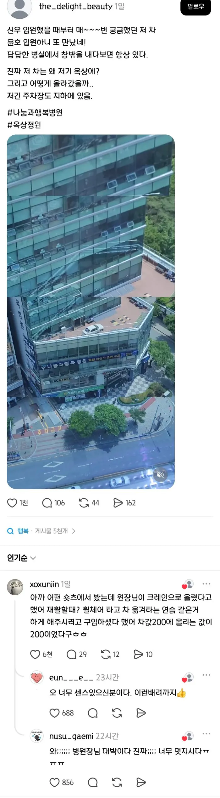
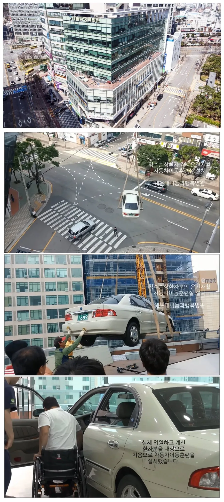

오


오
진짜멋있다
와 병원장님 생각이 깊으시다
건축법에 문제 없나..?
흔한건데 병원이라서 신기했던거지
구동계 빼고, 엔진 없애고 하면 차체만 하면 450~600kg 남짓일 텐데...
수영장 차리는 건 아닌이상 저렇게 고정하중만 주는 건 그닥.. 큰 문제는 없을 거임.
병원 목적으로 지은 건물이면 단독주택 4층 빌라 보다 무지무지 튼튼함 걱정 ㄴㄴ해.
여썰고 저썰면 가벼움
문제 없움
아 오지랖 시발 문제됐으면 알아서 하겠지
댓글 병신들만 모아놨나
저거 다 ai임
사람일리가 없잖아
ㄹㅇㅋㅋ
여름에 뜨겁겠는디?
그것도 포함해서 재활이래
환자분 버티셔야해요. 에어컨 곳 나옵니다.
저 그냥 지하철 탈게요
운전은 전투다 각계전투
장애인도 뜨거운 차 타봐야지
저 환자분 말고도 계속해서 쓸수 있겠는데
차를 들어올리는데 나무토막 2개가 전부야?
나무밑에 철프레임 있어
나무 밑에 공간 있어요
참의사
와...
와...
캬.....
띠용
와 저런 생각도 못했네
대단하신 분이다
진짜 생각 못 했는데 진짜 좋은 방법이네
Wow,,
난 아직도 기아 옵티마가 중형세단 디자인 중에 최고라고 생각함 부식이슈 때문에 너무 은퇴가 빨랐던 차종
난 저거 앞에 크레도스 1, 2가 디자인은 더 맘에 들었음 ㅋㅋㅋ 옵티마는 리갈이 이쁘긴 했어
댓글 항상 이상한애들이 껴있네 진짜 ㅋㅋㅋ
저기 유명한 재활병원이야. 뇌질환, 척수환자 많이가는 곳인데 재활 잘해주신다고 들었어. 원장님이 저렇게 환자 재활에 마음을 쓰시니 재활도 잘하는가봄..!

'의사'
자세히 보면 차만 있는게 아니라 차 앞에 방지턱 같은 것도 있는 거 같네
오 그러네 뭐지 저기서 운전도 하나?
줫 간 지
아 연습용